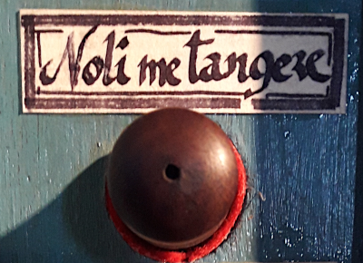
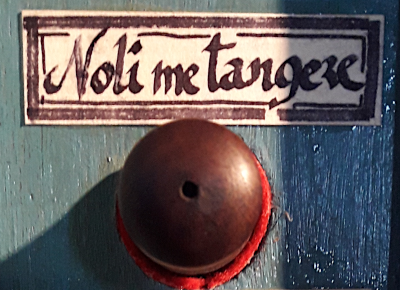

Welcome!
My name is Nicolás Varela García, I'm currently a Predoctoral Fellow at the Universidad Carlos III de Madrid, where I lecture and I'm a candidate in the PhD program in Economic History.
My research focuses on the monetary policy of the francoist regime, for which I explore: 1)The distribution of power among the different actors involved in policymaking; 2)The joint evolution of the different indicators and their causality relationships; and 3)The differential impact of monetary policy in and the role of the private banking system.